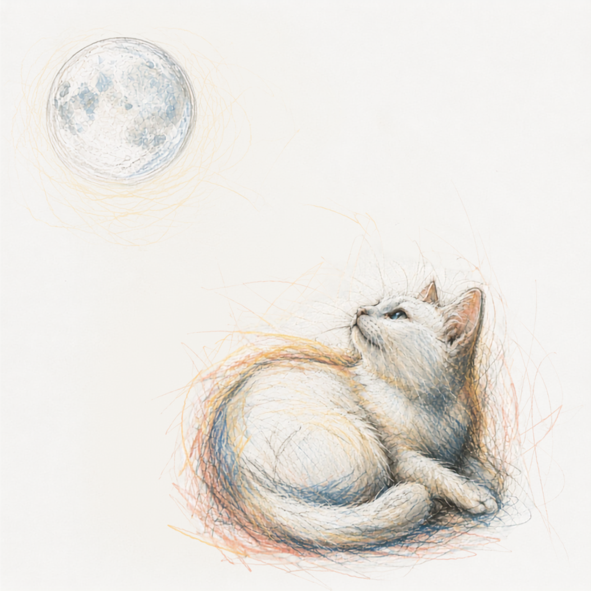

MIO CALLOWAY
born of afternoon light & borrowed languages
窓際のカフェ、午後の光、 ちょっと遠い国の空気。 そういうものに似た音楽をつくっています。
New Songs
月色つきいろ
同じ月を、昼と夜に見た二つの歌。
昼は、見上げても言わないでおく。夜は、初めてその名前を月に重ねる。
言わない昼と、言わせて、の夜。そのあいだにある、名前のつかない色を「月色」と名づけました。

昼 / Day白夜月びゃくやづき
昼の空に浮かぶ、見落とすほど淡い月。見上げて、それでも言わないでおく歌。
夜 / Night
Fly Me
夜にもう一度、同じ月を見上げて。初めて、あなたの名前をそっと月に重ねる歌。
Mini Album

Hours
朝、昼、夕方、夜。一日の光を、4つの音にして。
Hours
-
1
Sunday1分31秒
-
2
ぽこあぽこ58秒
-
3
Five PM1分54秒
-
4
窓辺の月1分31秒
the hours fold away
昼のわたしが、知らない夜のこと。

Side B
-
Side B
"the hours fold away" — Hours への、見えない折り返し。